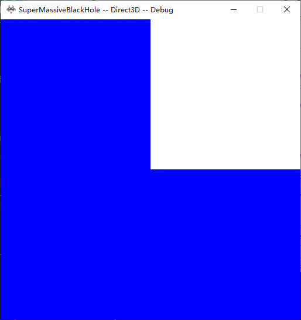
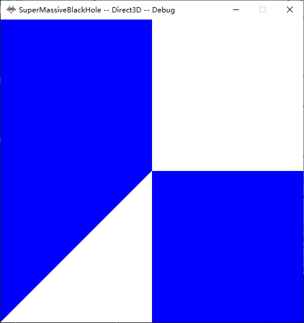
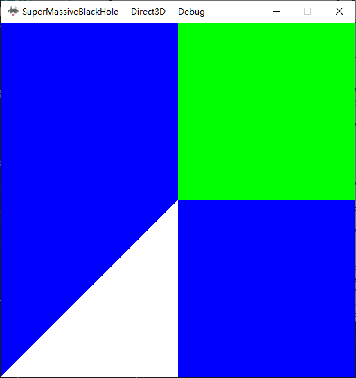
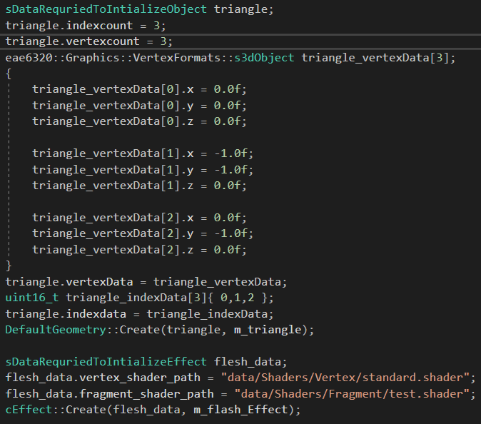
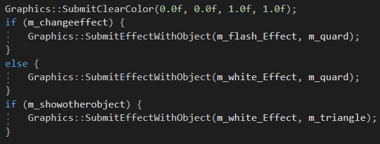
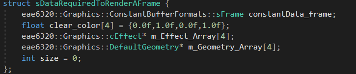

Assignment4
BlueBackGround with white square

BlueBackGround with white square and white triangle

BlueBackGround with green square and white triangle

The User needs to provide data to initialize effects and geometry.
Code Initalize Effect

Then the user could submit those infomation to graphics to draw
Submit data based on conditions

Here is the struct in the graphics system that specifies datas needed for render a frame, It has size of 232 on x64 system and 186 on win32, Cause pointer takes 4 bytes on win32 and 8 bytes on x64. We used a two layers buffer system, which means we
will have an extra data needed for render a frame struct during runtime. Hence, the total memeory used for graphics will be 464 bytes for x64, and 372 bytes for win32.

Finally, the object takes 20 on win32 and 32 on x64, the effect takes 20 on win32 and 16 on x64,which is wired cause it has size of
\ About the build, press space to see the triangle, press enter to see square changes color
Controlled_win32.zip
Controlled_x64.zip